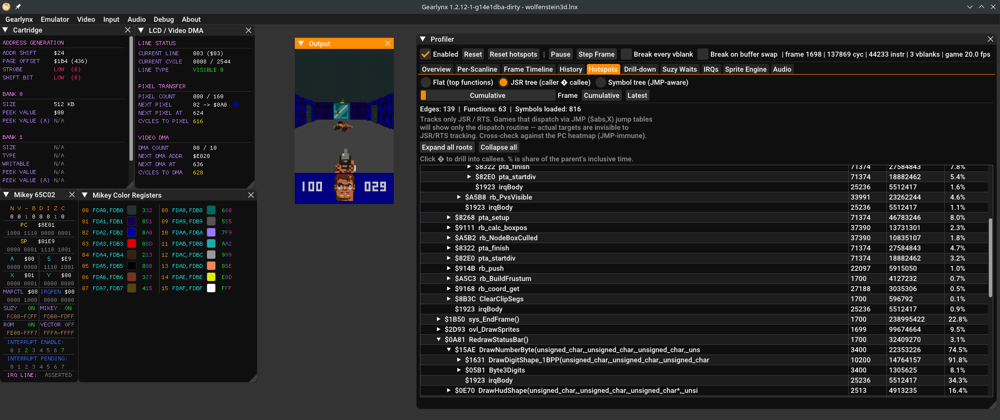
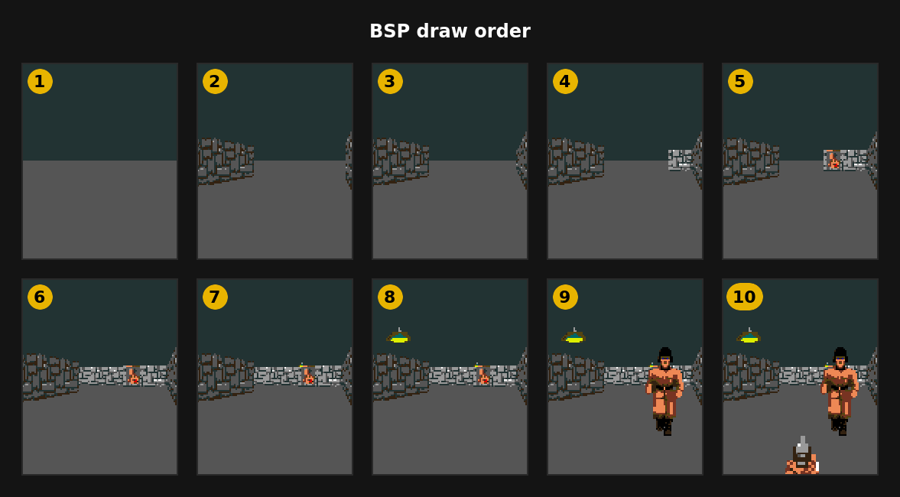
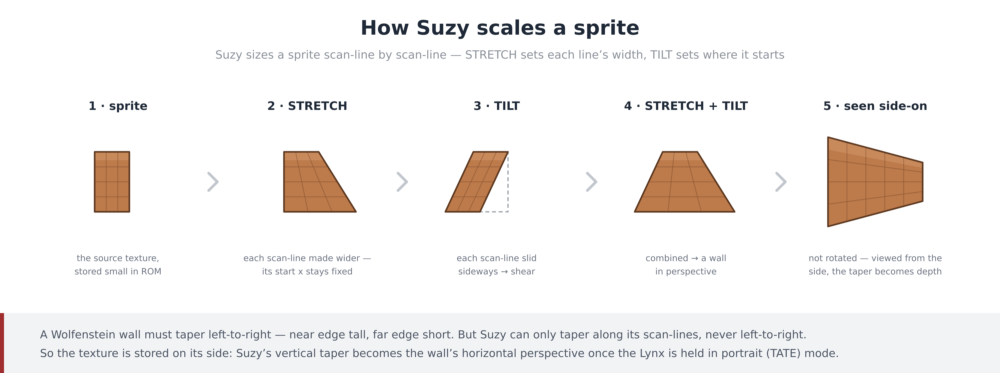
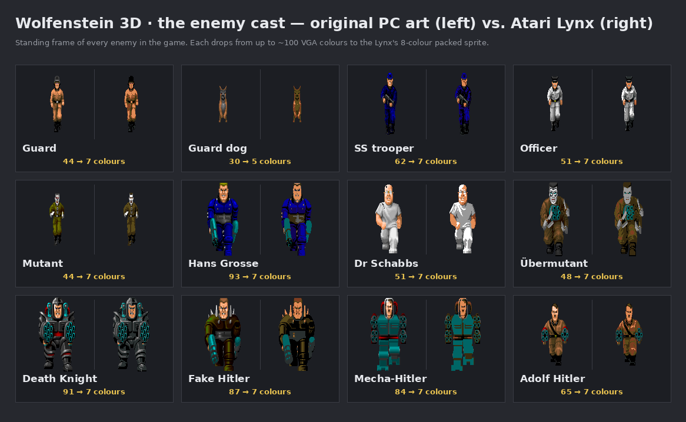
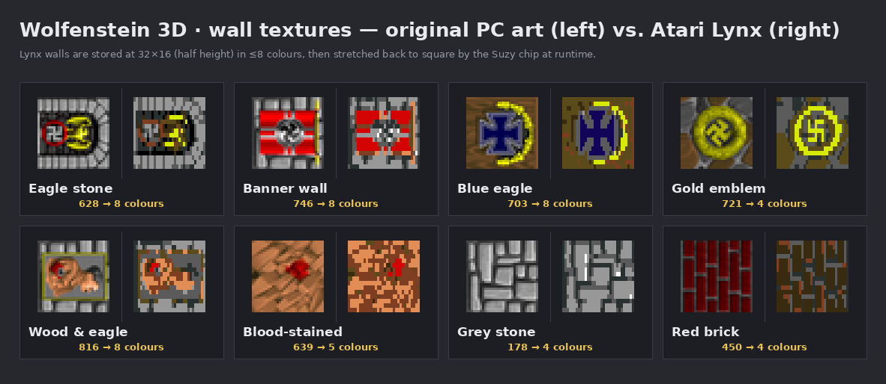
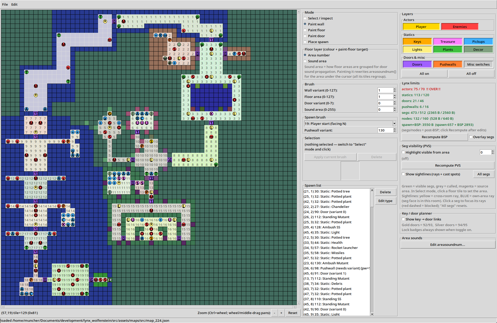
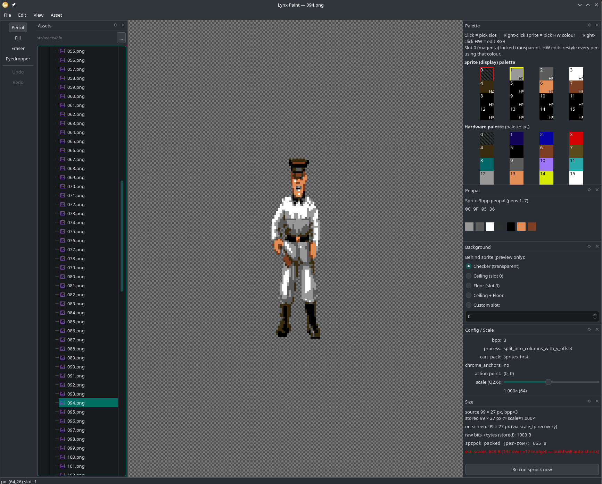
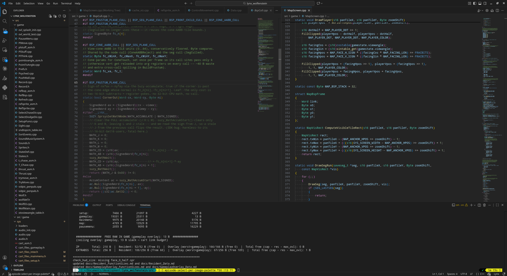

Case study · Atari Lynx
Wolfenstein 3D on the Atari Lynx
The entire 1994 Mac version — every level, boss, sprite and animation — squeezed into a 512 KB cartridge and rendered by a 16-bit sprite chip named Suzy. Four years of work.
The shareware build (first three levels) is publicly released and available to download and run. The full version is still in progress.
Download on AtariAge ↗
Why Wolfenstein, and why the Lynx?
I took my first steps on the Lynx in 2017, after reading the Diary of an Atari Lynx Developer series. I'd always been curious about how the machine worked under the hood, and what its unrealised potential was. It got serious around 2021.
I've always been a huge id Software fan — they were my heroes at university.
Every John Carmack .plan file, every interview, every Michael
Abrash article, all of their source code: I lapped it up. But it was
John Romero mentioning that id had themselves started an Atari Lynx version
of Wolfenstein — and how cool they thought it would be on that platform —
that made the idea take hold. After looking at other ports to see what had
been done, I realised the Lynx could do a genuinely good job here.
What came across from the original
The Lynx version is built on the source of the 1994 Mac release — itself a derivative of the SNES and Jaguar versions. It contains all of the original gameplay data and logic, all sprites and animations, wall textures, every boss and all of the levels. The whole Mac version has been squeezed into a 512 KB cartridge. Some of the larger maps have reduced wall complexity to fit into memory, and in-game music was cut in favour of sound effects.
How the engine draws
The renderer is a heavily customised version of the original Mac one. The Mac uses a Binary Space Partitioning (BSP) tree to speed up visible-surface determination; the Lynx does too, with some extra culling on top.
Where the Lynx differs is how walls are actually drawn. The Mac draws walls with the CPU, column by column, pixel by pixel. The Lynx has a 16-bit sprite engine — a chip called Suzy — with some insanely powerful scaling features. So instead of the CPU drawing each wall pixel by pixel, the Lynx draws each wall section once with Suzy, then leverages her ability to stretch and tilt that section into the required 3D perspective.
That really is the secret sauce. Each wall segment is a single Suzy stretched sprite. On any other platform of the time, a wall segment is hundreds of thousands of CPU cycles of work. On the Lynx it's almost zero.

The main drawback: because Suzy can only perform these transformations across different scan-lines, the Lynx has to be held in portrait — TATE mode — for the effect to convince. (In id's own unreleased Lynx Wolfenstein, they made the same call.)

Suzy can also do multiplication and division in hardware — used constantly for perspective math. Crucially, the Lynx can run those operations simultaneously while the CPU does other work. Organising the code so CPU work and Suzy math overlap was the most time-consuming optimisation, and the most effective — effectively more work done per clock.
Getting the art onto the cart
Almost nothing transfers straight across — the Lynx is too different from a Mac or PC, so everything had to be converted. Graphics were the big job. The original ran in 256 colours; the Lynx shows 16 on screen at once. Picking a 16-colour palette that looked authentic, stayed readable in-game, and simply looked good took a long time.
Every in-game image was crushed to that palette, resized for the smaller screen, then given a manual per-pixel touch-up. At build time the images are packed into the Lynx's native compressed sprite format to save cartridge space.


| In-game assets | Uncompressed (3bpp) | Packed on-cart |
|---|---|---|
| Sprites (170 frames) | 238 KB | 74 KB |
| Walls (35 textures) | 6.6 KB | 6.4 KB |
| Total | ≈ 245 KB | ≈ 81 KB |
So 245 KB of art compresses into 81 KB — and of that, only about 5 KB ever lives in Lynx memory at once. In-memory sprites, enemies and walls alike, sit in a time-to-live (TTL) cache that's refreshed every frame. Sound is a similar story: samples were pulled from the DOS version and downsampled to 4-bit, 2000 Hz, one-second clips.
The toolchain
Development is Visual Studio Code with Neovim, plus a heavily modified GearLynx emulator I've extended with a profiling suite for CPU and sprite-engine timings. Everything else — map editors, sprite editors, cartridge packers — is custom Python.



Could the engine run other games?
Yes. All source and tools will be released once the full Wolfenstein 3D is complete — at which point anyone could swap the assets and build something new. A Doom conversion is possible too, likely based on the SNES version with its simplified geometry, but it would probably need at least a 1 MB cart. The real limit is the Lynx's tiny RAM: assets can't be read straight off the cartridge — everything, from lookup tables to enemy logic to graphics and sound, has to be copied into RAM first, so the cart behaves more like a disk drive than ROM.
Beyond finishing the full Wolfenstein 3D, current Lynx work is split across a port of the Amiga's Another World and the Atari ST version of Prince of Persia — plus a released Super Mario Bros. port and a Mortal Kombat II proof of concept. See all Lynx projects →